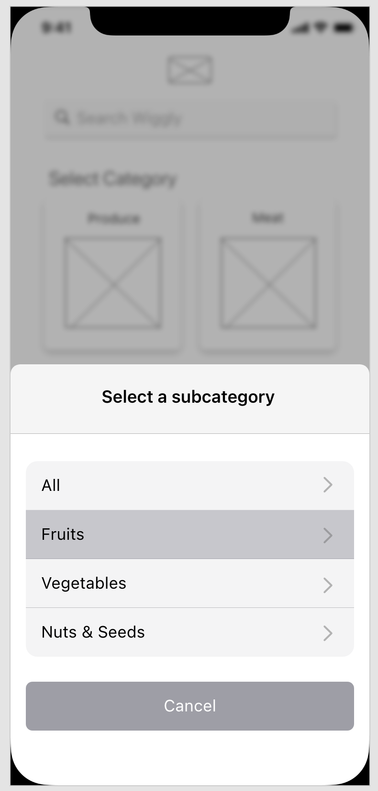
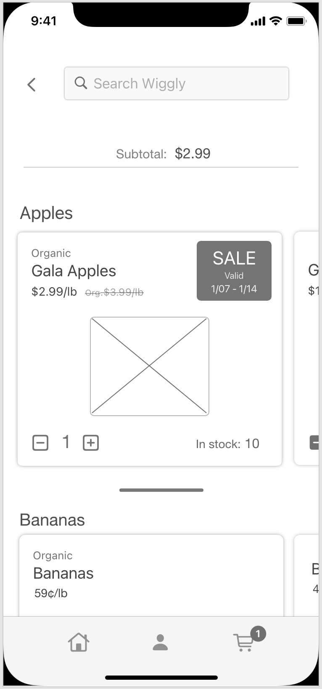
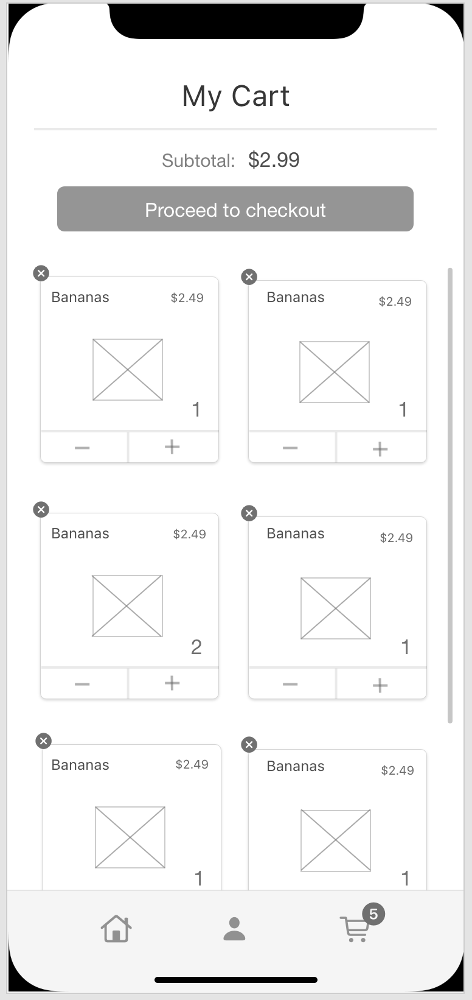
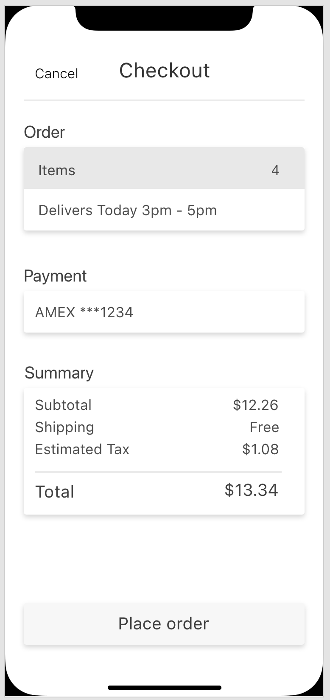
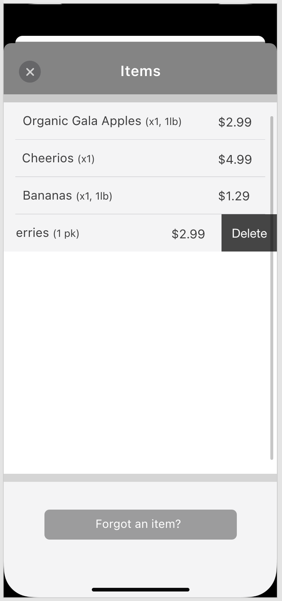
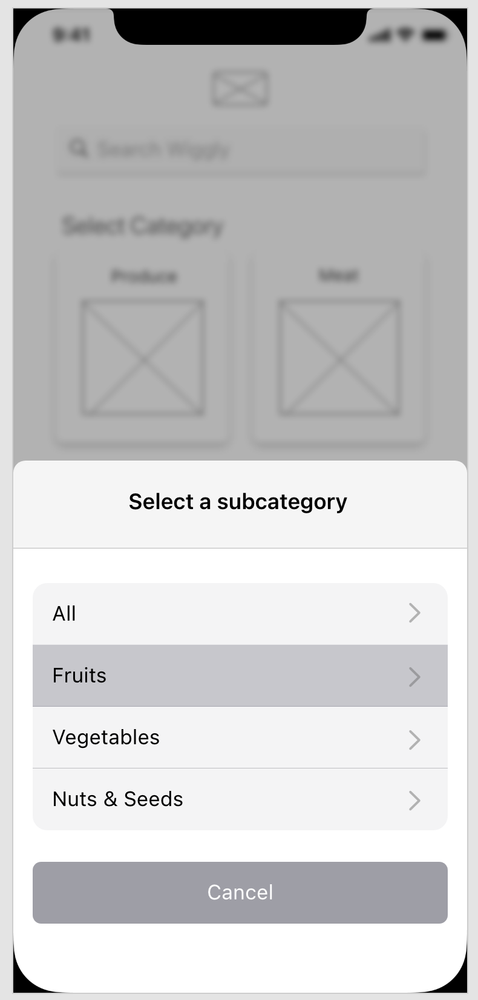
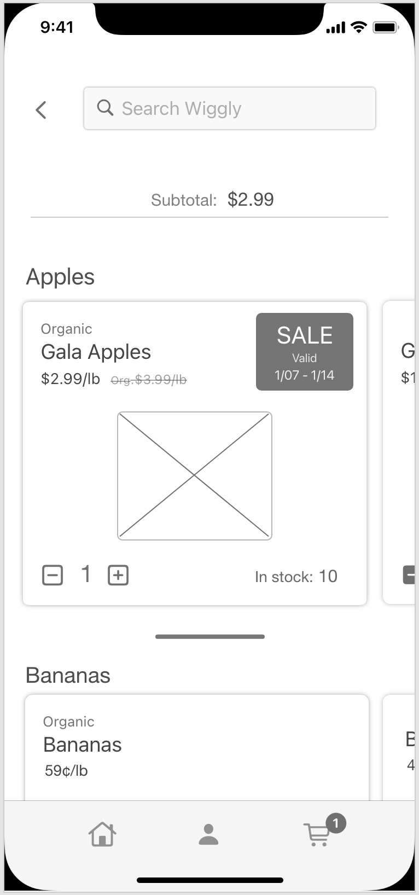
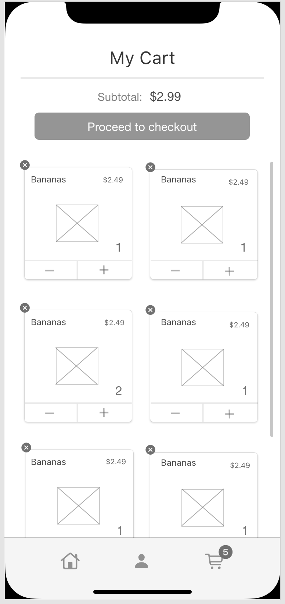
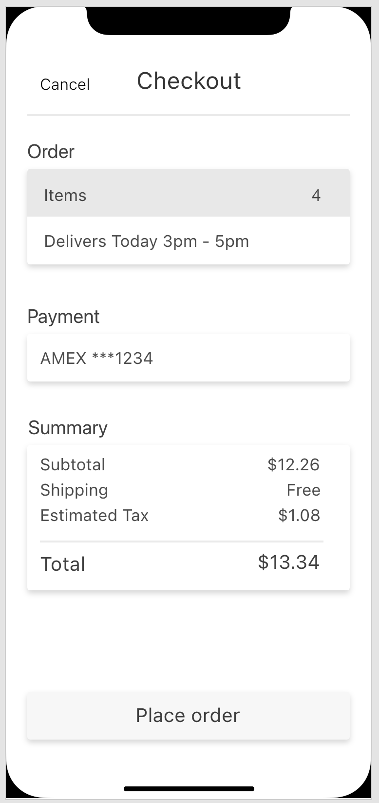
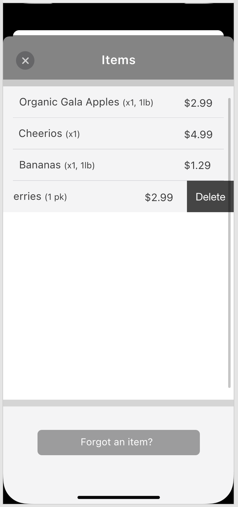

Overview
For the Grocery Prime project, I was tasked with three
assignments:
1. My first goal was to discover how Grocery Prime’s
app can help solve shoppers’ pain points.
2. Develop an interactive prototype focusing on the main
pain points found during the research phase, and
3. Complete a usability test with participants.
Research Planning
Goal
My research goal was to explore the needs of shoppers’ experiences in a short interview format.
Target Audience
The target audience for this project was people who visit the grocery store at least once a week, own a smartphone, and want to use an app to make their shopping experience more pleasant and/or efficient.
Method
For recruitment, I randomly selected participants at a local grocery store and asked them if they would like to participate in a quick survey study. I recruited on two different days and times to help improve the external validity (generalizability) of the short survey study.
Interview Questions
1. Can you tell me about your last grocery shopping experience?
2. Can you tell me about a time when you had an issue or problem shopping?
3. How do you typically prepare before you go grocery shopping?
4. What would be the worst-case scenario when grocery shopping?
5. Do you use a smartphone to shop in general? And if so, what are your thoughts and feelings about using an app to shop at a grocery store.
Participants
A total of five participants (N = 5) were included in the study. The demographics of the sample group were as follows:
Gender: 1 man and 4 women.
Age range: 22 to 48 years.
Race/Ethnicity: 1 Caucasian, 2 Latino, and 2 Filipino-American.
Sample of Participants' Responses
Q 1. “I wanted to pick up some things, not too many. I needed some body wash and some hygiene products. I could have just ordered them but I was craving some seltzer also, so you know, it was just easier to come down here, I don’t live far anyway, so.”
Q 2. “I couldn’t find a crock pot. I wanted to cook a roast on the crock pot. Also, I hate or avoid going down the cookie aisle because the kids feel tempted and I don’t like that. They’ll ask if they can eat cookies for breakfast.”
Q 3. “Either I make a list or it’s just in my head. If I really need something I make a list but if I want something I don’t make a list.”
Q 4. “When I go to the store for one thing and it’s not there. I went to ‘Food 4 Less’ for asparagus and they had no asparagus!”
Q 5. “Yes, to keep track of my stuff. I still like to do my own personal shopping because I like looking at the products and I don’t like paying for a delivery fee or having to keep adding items to get free delivery.”
Analysis
Based on my interviews, I believed participants enjoy a fast or convenient shopping experience. Moreover participants appreciated they can find on-sale items on the item itself (designated by a yellow sticker). However, what participants found frustrating was if an item they are looking for is no longer available or if they missed a sale on an item. Finally, I found this to be the most important pain point: it is difficult to know the quantity left of a specific product that is still on sale before customers arrive at the store. Many times customers know when a product is on sale but don’t know how much of that product (quantity) is currently in stock. Giving customers more information about a product’s availability could improve their shopping experience.
Prototyping the Solution
Solution
For the app design, I indicated which items are on sale with a ribbon, to serve as a quick visual aid, in the corner of the product container. I also included an “in stock” feature, written in text, near the product to show, in real time, the quantity left of that specific item. Moreover, I displayed the date range of when the sale price expires. Lastly, near the checkout process, I included a feature to remind the user if he or she has all the items they need, or if they want to go back and continue shopping.
Steps
In order to solve the pain point, the user completed five steps:
1. The user selects a category on the home page.
2. The user chooses a subcategory.
3. The user adds or subtracts an item. An “in stock” feature will change the quantity of the selected item when the user adds or subtracts the item.
4. In the “My cart” screen, the user can view how many of each item they have.
5. When the user presses the checkout button, they will have a chance to go back to select additional items before placing their order.
Sketches
Home
Subcategory
Products
My Cart
Checkout
Wireframes
 









Usability Test
Task
Researcher (Ricardo): "In this research study, you will be asked to use a prototype of a grocery store app using this laptop. Can you navigate through the app to locate the number of items you have in your cart and the subtotal before placing an order? I will briefly explain how to use the prototype. It is simple. You can click anywhere you want on the app. However, the app will guide you where to click by highlighting the button in blue color, allowing you to proceed to the next screen." (Participants completed the task using Adobe XD.)
Sample of Participants' Responses
“How can you scroll down?” “How do I add more?” “It’s not allowing me to scroll down.” Participant reported it was easy to see the price of the items and to know if the item is expensive or not.
“It looks simple”, “Can I scroll sideways?” “Do I pay right here?” This participant reported the app looked clean and easy to use. He liked the large picture of the item but looked a little confused in his facial expression about all the other information surrounding the item.
“Can I look for an item and save it for later?” “It looks clean.” “Where do I enter my card information?” “The price is hard to see here.” This participant asked several good questions. She appeared focused on each screen taking her time and looking around all the information on each screen carefully
What Went Well
1. All participants appeared attentive to the task and understood what the study was about.
2. Most of the participants reported the app was easy to use.
3. Some participants reported the app looked clean which was consistent with this designer’s goal.
4. Users were satisfied with the presentation of the content, overall.
What Needs to Change
1. Some participants reported the text appeared a little too small to read.
2. Add a “Return to Cart” button in the checkout screen to allow users to continue shopping if they want.
3. Make the add and subtract feature more distinct from the “in stock” feature, perhaps place them in their own separate container below the item?
Project Summary
This was a fun project to complete. From going out into the field interviewing participants, sketching wireframes on Adobe XD, and finally testing my ideas with people, I felt this project captured the process of a real world design project. I learned how important doing research and usability testing is, because it helped me see the shortcomings of my original design. The research phase, moreover, reinforced the idea that design should be user centric.